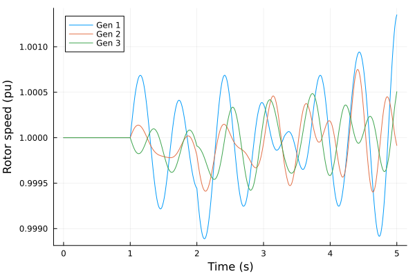
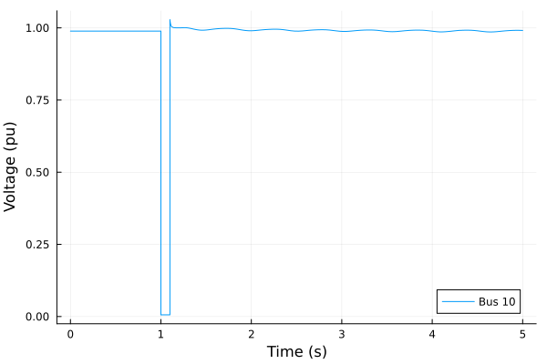

Time-Domain Simulation
Complete guide to phasor-domain dynamic simulation in Powerful.jl.
Basic Workflow
Time-domain simulation (TDS) takes three steps: solve the power flow, add the dynamic models, and simulate.
using Powerful
using PowerfulCases
# Step 1: Solve power flow
case = load("ieee14")
sys_pf = SystemModel(parse_network(case.raw))
pf_sol = solve(ACPowerFlowProblem(sys_pf), Newton())
# Step 2: Parse dynamic models (GENCLS generators, SEXS exciters, TGOV1 governors)
dyr_data = parse_dynamics(case.dyr, sys_pf)
# Step 3: Create and solve the TDS problem
init = setup_tds(pf_sol, dyr_data)
prob = TDSProblem(init; tspan = (0.0, 10.0))
sol = solve(prob)TDSSolution{Float64}
Solver: TDS (DiffEq)
Timesteps: 9
Time span: (0.0, 10.0)
States: 30 differential, 58 algebraic
Return code: Success
Interpolation: available
Without a disturbance the system stays at its power flow equilibrium. See Getting Started for the power flow steps.
Understanding the Transition
From Power Flow to TDS
Power flow solves the steady-state algebraic equations:
0 = g(y) # Algebraic: power balanceTDS adds differential equations for the dynamics:
dx/dt = f(x, y, t) # Differential: machine and controller dynamics
0 = g(x, y, t) # Algebraic: network equationsKey concepts:
- x: Differential states (e.g. rotor angle δ, rotor speed ω, controller states)
- y: Algebraic variables (e.g. bus voltage magnitude V and angle θ)
- DAE: Differential-algebraic equations
Model Replacement
Dynamic generator models replace the static generator (PV or Slack entry) with the same bus and ID:
| Static Model | Dynamic Model | States Added |
|---|---|---|
| PV or Slack generator | GENCLS | δ (rotor angle), ω (rotor speed) |
| PV or Slack generator | GENROU, GENSAL, GENTPJ1 | δ, ω and flux states |
| PV or Slack generator | REGCA1 | converter current states |
Exciters (SEXS), governors (TGOV1) and converter controls (REECA1) do not replace anything; they attach to the generator with the same bus and ID.
The TDS system contains:
- Dynamic models with their differential states
- The remaining static models (PQ loads, branches, transformers)
- All network equations
TDSProblem Construction
Standard Workflow (Recommended)
# Initialize the TDS system from the power flow solution
init = setup_tds(pf_sol, dyr_data)
# Create the problem
prob = TDSProblem(init; tspan = (0.0, 10.0))What setup_tds does:
- Links each dynamic model to the static model it replaces or controls
- Removes the replaced static models
- Initializes the dynamic states from the power flow solution
- Returns a
TDSInitializationwith the TDS system and the initial conditions
Staged Construction
For inspecting the intermediate results, run the two stages separately:
using PowerfulTDS: prepare_tds_system
# Stage 1: build the TDS system and the links between dynamic and static models
sys_tds, links = prepare_tds_system(sys_pf, pf_sol, dyr_data)
links.source_type # dynamic model of each link5-element Vector{Symbol}:
:GENCLS
:GENCLS
:GENCLS
:GENCLS
:GENCLSlinks.target_type # static model each one replaces5-element Vector{Symbol}:
:Slack
:PV
:PV
:PV
:PV# Stage 2: initialize the states from the power flow
init = TDSInitialization(sys_tds, links, pf_sol)
init.dyn.GENCLS.omega # rotor speeds in per unit: 1.0 is synchronous speed5-element Vector{Float64}:
1.0
1.0
1.0
1.0
1.0init.dyn.GENCLS.delta # rotor angles (rad) from the power flow5-element Vector{Float64}:
0.18314194193674693
0.016060316309580627
-0.011975627016130336
-0.08524600886050325
0.016927522608908823# Stage 3: create the problem (init contains the system)
prob = TDSProblem(init; tspan = (0.0, 10.0))TDSProblem{Float64, PowerInjection}:
Time span: 0.0 → 10.0 s
State variables: 30
Algebraic variables: 58
Events: 0
Dynamic models: GENCLS, SEXS, TGOV1
When to use:
- Debugging initialization failures
- Adjusting initial values (e.g.
init.dyn.GENCLS.delta) before creating the problem
Solving TDS Problems
Default Solver
sol = solve(prob) # QNDF(linsolve = KLUFactorization())QNDF is a quasi-constant step size NDF method (variable-order BDF family) suited to stiff DAE systems. KLUFactorization is a sparse LU factorization for the sparse Jacobian.
In a checkout of this repository QNDF is the fork of OrdinaryDiffEqBDF the root Project.toml pins (restarts after events, dense output of event-truncated steps); a package installed with Pkg.add uses the released one, which is correct but takes more work after events. See the developer guide.
Explicit Solver Selection
The mass-matrix DAE can be solved with QNDF or FBDF:
sol = solve(prob, QNDF(linsolve = KLUFactorization())) # Default
sol = solve(prob, FBDF(linsolve = KLUFactorization())) # Fixed-leading-coefficient BDFPass linsolve = KLUFactorization() so that the Jacobian is factorized as a sparse matrix.
Solver Options
Keyword arguments other than the ones below are passed on to the OrdinaryDiffEq.jl solve.
Tolerances
sol = solve(prob;
abstol = 1e-8, # Absolute tolerance
reltol = 1e-6 # Relative tolerance
)The defaults come from the problem's TDSConfig (abstol = 1e-6, reltol = 1e-3, see Configuration); explicit keywords take precedence. Tighter tolerances are more accurate but slower.
Time Stepping
sol = solve(prob;
dt = 0.01, # Initial time step
dtmin = 1e-6, # Minimum step size
dtmax = 0.1 # Maximum step size
)Saving Options
# Save at specific times
sol = solve(prob; saveat = 0.0:0.01:10.0)
# Save only start and end
sol = solve(prob; save_everystep = false)Other Keywords
initializealg: reinitialization of the algebraic variables after events (see DAE Reinitialization)validate = true: check before solving that all residuals are zero att = 0verbose = false: print setup progressrecorder: anInjectionRecorder(see Injection Recording)
Events and Disturbances
Events introduce disturbances during the simulation: branch trips, load changes, parameter changes and faults.
Defining Events
Events are passed when creating the TDSProblem:
init = setup_tds(pf_sol, dyr_data)
prob = TDSProblem(init;
tspan = (0.0, 10.0),
events = [
BranchTrip(1.0, 1, 5, "1"), # Trip line 1-5 at t = 1.0 s
BranchClose(2.0, 1, 5, "1"), # Reconnect it at t = 2.0 s
]
)Built-in Event Types
Branch Trip/Close:
BranchTrip(time, from_bus, to_bus, circuit) # Disconnect branch
BranchClose(time, from_bus, to_bus, circuit) # Reconnect branchThe circuit ID must match the data file exactly (including spaces).
Bus fault: BusFault, see Fault Simulation.
Custom Events with FieldModification
Any model field can be changed at a given time with FieldModification:
events = [
# Increase the constant-power load at bus 3 by 0.1 pu (10 MW on a 100 MVA base)
FieldModification(5.0, :PQ, (3, "1"), :pl, :add, 0.1),
# Double the damping of the generator at bus 2
FieldModification(3.0, :GENCLS, (2, "1"), :D, :multiply, 2.0),
# Take a branch out of service
FieldModification(1.0, :Branch, (1, 5, "1"), :status, :set, 0.0),
]FieldModification parameters:
time: When to apply (seconds)model: Target model (:Branch,:PQ,:GENCLS, etc.)key: Instance key (see Model Keys)field: Field to modify (:status,:pl,:D, etc.)operation::set,:add, or:multiplyvalue: Value for the operation
Model fields hold per-unit values on the system base, so value is in per unit as well.
Reference Steps with SetpointChange
The references of controllers are setpoints held by the simulation, not model fields: the voltage reference vref0 of an exciter, the power reference pref0 of a governor. SetpointChange steps them, as a staged test does:
events = [
# AVR voltage reference step test: +2% at t = 1 s, back at t = 11 s
SetpointChange(1.0, :SEXS, (2, "1"), :vref0, :add, 0.02),
SetpointChange(11.0, :SEXS, (2, "1"), :vref0, :add, -0.02),
]Its parameters are those of FieldModification, with the setpoint in place of the field. A setpoint is in the units the model uses: TGOV1's power reference is in speed units (pref = R·P), so a load reference step of ΔP is a step of R·ΔP in pref0.
Model Keys
Each model instance is identified by its key:
| Model | Key Fields | Example |
|---|---|---|
| Bus | (i,) | (10,) or 10 |
| Branch | (i, j, ckt) | (1, 5, "1") |
| PQ | (i, id) | (3, "1") |
| GENCLS, GENROU, SEXS, TGOV1 | (BUS, ID) | (2, "1") |
Integer and string elements are converted to the key's field types, so plain literals such as (1, 5, "1") work.
Example: Line Trip and Reclose
events = [
BranchTrip(1.0, 1, 5, "1"), # Trip at t = 1.0 s
BranchClose(2.0, 1, 5, "1"), # Reconnect at t = 2.0 s
]
init = setup_tds(pf_sol, dyr_data)
prob = TDSProblem(init; tspan = (0.0, 5.0), events = events)
sol = solve(prob; saveat = 0.01)
# Rotor speed of every generator
data = get_series(sol, :GENCLS, :omega)
keys(data)(:t, :GENCLS_omega_1_1, :GENCLS_omega_2_1, :GENCLS_omega_3_1, :GENCLS_omega_6_1, :GENCLS_omega_8_1)using Plots
plot(data.t, [data.GENCLS_omega_1_1 data.GENCLS_omega_2_1 data.GENCLS_omega_3_1];
label = ["Gen 1" "Gen 2" "Gen 3"], xlabel = "Time (s)", ylabel = "Rotor speed (pu)")
For implementation details, see Developer: Events.
Fault Simulation
Three-phase bus faults are simulated with the BusFault event, which adds a fault model at the bus and switches it on and off.
BusFault Event
# A fresh system: the ZIP load conversion below modifies the power flow system's loads
sys_f = SystemModel(parse_network(case.raw))
pf_f = solve(ACPowerFlowProblem(sys_f), Newton())
dyr_f = parse_dynamics(case.dyr, sys_f)
# 100 ms fault at bus 10
events = [BusFault(1.0, 1.1, 10, "F1"; xf = 0.001, rf = 0.0)]
# Constant-impedance loads for numerical robustness during the fault
config = SimConfig(solver = (TDS = TDSConfig(
convert_pq_to_zip = true, p_zip = (1.0, 0.0, 0.0), q_zip = (1.0, 0.0, 0.0)
),))
init = setup_tds(pf_f, dyr_f; config = config)
prob = TDSProblem(init; tspan = (0.0, 5.0), events = events)
sol = solve(prob, FBDF(linsolve = KLUFactorization()))TDSSolution{Float64}
Solver: TDS (DiffEq)
Timesteps: 239
Time span: (0.0, 5.0)
States: 30 differential, 58 algebraic
Return code: Success
Interpolation: available
t, v_10 = get_series(sol, :Bus, :v, 10)
plot(t, v_10; label = "Bus 10", xlabel = "Time (s)", ylabel = "Voltage (pu)")
BusFault parameters:
time_on: Fault application time (seconds)time_off: Fault clearing time (seconds)bus: Bus number where the fault occursid: Fault identifier (default:"F1")xf: Fault reactance in per unit (default: 0.003)rf: Fault resistance in per unit (default: 0.0)fault_type,rg,xg: Unbalanced fault type and fault-to-ground impedance, for buses modeled in three phases only
What happens:
TDSProblemadds aFaultmodel at the bus (once per bus and id; a repeatedBusFaultwith the same bus and id must have the same impedance)- The fault is applied at
time_onand cleared attime_off
BusFault is the fault event for every simulation mode. A fault with xf < 0.01 pu warns unless the loads are converted to 100% constant impedance.
setup_tds applies the ZIP conversion to the loads of the power flow system it is given, which is why the example above builds a separate system.
Physics:
- Fault admittance:
Yf = 1/(rf + j·xf) = gf + j·bf - For a fault with
rf = 0:bf = -1/xf(large and negative for smallxf) - The large shunt susceptance draws reactive power and depresses the voltage
Fault Severity
The fault impedance sets the severity (for rf = 0):
| xf (pu) | bf (pu) |
|---|---|
| 0.1 | -10 |
| 0.01 | -100 |
| 0.001 | -1000 |
| 1e-4 | -10000 |
A smaller xf gives a larger |bf| and a deeper voltage depression.
A small xf depresses voltages far below the constant-power breakpoint (constant_power_vmin). Constant-power loads there can make the network equations singular during the fault (the algebraic Jacobian loses rank and the network has no solution beyond that point), which stops the simulation. Use constant-impedance loads (convert_pq_to_zip = true) for severe faults on large systems.
DAE Reinitialization
After a topology change (fault, trip) the algebraic variables must again satisfy g(x, y) = 0. PowerFlowInit solves the network equations for them with the differential states fixed:
- Initial guess: voltages set by the
initial_guessoption - Newton iteration: solve the algebraic equations with the differential states fixed; the bus power balance rows are solved as current mismatch (divided by the bus voltage magnitude), which removes their spurious root at zero voltage
- Update the integrator: continue from the consistent state
# Default: flat start (V = 1.0, current θ)
sol = solve(prob, FBDF(linsolve = KLUFactorization()))
# Pre-fault voltage magnitudes, current θ
sol = solve(prob; initializealg = PowerFlowInit(initial_guess = :pre_fault))
# Current voltages as they are
sol = solve(prob; initializealg = PowerFlowInit(initial_guess = :current))
# The generic OrdinaryDiffEq initializer (may fail after severe faults)
sol = solve(prob; initializealg = BrownFullBasicInit())Initial guess options:
| Option | Voltage | Angle | Use Case |
|---|---|---|---|
:flat_start (default) | V = 1.0 | Current θ | Converged after the short faults tested |
:pre_fault | Pre-fault V | Current θ | Short faults, angles near their pre-fault values |
:current | Current V | Current θ | Small disturbances; converged after the long faults tested |
When to use each option:
:flat_start: converged after the short faults tested, and did not after the 2 s fault below, where:currentdid:pre_fault: fault-on/fault-off studies where the system returns to its pre-fault state. Unsuitable when the angles have moved far from their pre-fault values (after a long fault or a pole slip), where the pre-fault magnitudes are a poor guess:current: small perturbations, load changes, setpoint changes; converged in the long-fault cases tested, where the voltages follow the angles the integration has reached
Which guess converges depends on the case.
If the Newton iterations of a reinitialization do not converge in maxiters the simulation does not throw: it warns (the time, the iterations, the residual and the worst rows) and returns sol.retcode == :ConvergenceFailure, with the trajectory up to the instant of the failure. A contingency screen or an optimization loop reads the return code. For example, on ieee14 with GENROU machines, a 2 s fault at bus 3 (xf = 0.003) clears into a state that :pre_fault (and :flat_start) do not converge to, and that :current does. Errors in the models or the code still throw, and so does an inconsistent initial state: DiffEq's own check at t0 throws, since an inconsistent start is a model or initialization bug, not a physical outcome.
The default PowerFlowInit takes maxiters and the start (flat_start = true for a flat start, false for pre-fault voltages) from the problem's TDSConfig.
Voltage Playback
Playback drives a bus with a recorded voltage, its magnitude V(t) and angle Θ(t), so that the devices at that bus can be simulated against measurements: the standard playback validation of a plant model. The rest of the network does not enter: the playback holds the bus voltage to the recording and supplies whatever power that takes.
VoltagePlayback is built from the recording and added to the dynamic models. It has no DYR record. It replaces the power flow Slack unit with the same bus and ID, as a dynamic generator replaces its unit:
using PowerfulCore: refresh_external!
# The recording: times (s), magnitude (pu), angle (rad); a fault applied at 1.0 s and
# cleared at 1.15 s, each sampled twice (the values before and after it)
pb = VoltagePlayback(2; id = "PB", t = t_rec, v = v_rec, theta = θ_rec, breaks = [1.0, 1.15])
# The power flow starts at the recording's voltage: the slack bus is the playback's
v0, θ0 = playback_voltage(pb, 0.0)
sys.models.Slack.vs .= v0
sys.models.Bus.va[findfirst(==(2), sys.models.Bus.i)] = θ0
refresh_external!(sys, :Bus, :va) # the slack reads va as a copy
pf = solve(ACPowerFlowProblem(sys), Newton())
dyn = merge(parse_dynamics(dyr_file, sys), (VoltagePlayback = StructArray([pb]),))
sol = solve(TDSProblem(setup_tds(pf, dyn); tspan = (0.0, 3.0)))Interpolation. In each piece between breaks the recording is interpolated by a not-a-knot cubic spline: continuous with its first and second derivatives, so the integration steps across the samples without seeing a kink. The sharp edges of a recording (a fault applied or cleared) are breaks, where the spline restarts, so it does not ring at them. On a recorded fault this is more accurate than a monotone cubic (PCHIP), whose second derivative jumps at every sample, and takes 3 to 6 times fewer steps. Evaluation finds the segment by binary search, and keeps no state between evaluations.
Breaks. breaks are the times where the recording is discontinuous (a fault applied or cleared). The interpolant restarts at each: the simulation stops there, the step before it ends on the value before the break, and a reinitialization of the algebraic variables takes the value after it. A break time may appear twice in t, its first sample the value before the break and its second the value after; a break between samples is reached by the segments on either side. The breaks are the playback's only events, whatever the length of the recording.
The start. At tspan[1] the power flow's voltage at the bus must be the recording's, to the power flow's residual: the problem refuses a start that differs and names both values. Set the Slack's vs and the bus's va to playback_voltage(pb, tspan[1]) (after a break at tspan[1]). A tspan outside the recording is refused too.
The bus. Every Slack unit at the playback's bus must be replaced: by the playback, or by the dynamic model of that unit (the device under test). A unit left in place would hold the bus voltage too. The power flow splits the bus's power among its Slack units by mbase (active) and rmpct (reactive), and each dynamic model starts at its unit's share.
The playback has no parameters of its own, and the recordings are interpolated on the CPU.
Accessing Results
Solution Status
sol.retcode, length(sol.t), sol.t[end](:Success, 239, 5.0)sol.retcode is a Symbol (:Success for a completed run). sol.stats holds the integrator statistics (accepted and rejected steps, function evaluations, Jacobians):
sol.stats.naccept, sol.stats.nreject(229, 4)Time Series
get_series extracts any variable, differential or algebraic, of any model:
# One instance: returns (time vector, values)
t, delta_2 = get_series(sol, :GENCLS, :delta, (2, "1"))
# All instances: returns a NamedTuple with :t and one column per instance
data = get_series(sol, :GENCLS, :delta)
keys(data)(:t, :GENCLS_delta_1_1, :GENCLS_delta_2_1, :GENCLS_delta_3_1, :GENCLS_delta_6_1, :GENCLS_delta_8_1)Algebraic variables use the same API:
t, v_10 = get_series(sol, :Bus, :v, 10) # bus voltage magnitude
t, pm_1 = get_series(sol, :GENCLS, :P_m, (1, "1")) # mechanical power
extrema(v_10)(0.005592915408859587, 1.0285967516383407)Column name format: {Model}_{variable}_{key}, with the key elements joined by underscores:
Bus_v_10: modelBus, variablev, bus 10GENCLS_omega_2_1: modelGENCLS, variableomega, bus 2, id"1"TGOV1_LAG_y_1_1: modelTGOV1, variableLAG_y, bus 1, id"1"
The NamedTuple converts directly to a DataFrame:
using DataFrames
first(DataFrame(data), 5)| Row | t | GENCLS_delta_1_1 | GENCLS_delta_2_1 | GENCLS_delta_3_1 | GENCLS_delta_6_1 | GENCLS_delta_8_1 |
|---|---|---|---|---|---|---|
| Float64 | Float64 | Float64 | Float64 | Float64 | Float64 | |
| 1 | 0.0 | 0.183142 | 0.0160603 | -0.0119756 | -0.085246 | 0.0169275 |
| 2 | 1.0e-6 | 0.183142 | 0.0160603 | -0.0119756 | -0.085246 | 0.0169275 |
| 3 | 0.0196171 | 0.183142 | 0.0160603 | -0.0119756 | -0.085246 | 0.0169275 |
| 4 | 1.0 | 0.183142 | 0.0160603 | -0.0119756 | -0.085246 | 0.0169275 |
| 5 | 1.0 | 0.183142 | 0.0160603 | -0.0119756 | -0.085246 | 0.0169275 |
Save to CSV:
using CSV, DataFrames
CSV.write("tds_results.csv", DataFrame(get_series(sol, :GENCLS, :delta)))Raw Solution Data
sol.u holds the state vector [x; y] (differential states first, then algebraic variables) at each saved time, and sol(t) interpolates it:
sol.u[end] # state vector at the final time
sol(1.05) # interpolated state vector at t = 1.05 sFor named access, prefer get_series. See Accessing Results for the power flow result API.
Injection Recording
An InjectionRecorder tracks how much each model contributes to a shared residual equation, such as the active or reactive power balance at a bus, at every accepted time step. It helps to debug models and to see how components contribute to the network equations.
Basic Workflow
init = setup_tds(pf_sol, dyr_data)
prob = TDSProblem(init; tspan = (0.0, 2.0), events = [BranchTrip(1.0, 1, 5, "1")])
# 1. Define what to monitor: active and reactive power balance at buses 1 and 2
monitor = InjectionMonitor(:Bus => [:p => [1, 2], :q => [1, 2]])
# 2. Create the recorder from the problem
recorder = InjectionRecorder(monitor, prob)
# 3. Solve with the recorder attached
sol = solve(prob; recorder = recorder)
# 4. Retrieve the contributions at bus 1
table = contributions_table(recorder, :Bus, :p, 1)Defining What to Monitor
InjectionMonitor takes model => [variable => keys] pairs:
# Active power balance at two buses
monitor = InjectionMonitor(:Bus => [:p => [1, 2]])
# Active and reactive power balance
monitor = InjectionMonitor(:Bus => [:p => [1, 2], :q => [1]])The keys are retrieved later exactly as they were given (here the integers 1 and 2), so use the same form in the monitor and in the retrieval calls.
Inspecting Contributors
Before simulating, check which models contribute to the monitored equations:
recorder = InjectionRecorder(monitor, prob)
list_monitored_addresses(recorder) # [(:Bus, :p, 1), (:Bus, :p, 2), ...]
list_contributors(recorder, :Bus, :p, 2) # models injecting into bus 2's P balanceRetrieving Results
# NamedTuple with :time, one column per model, and :total
table = contributions_table(recorder, :Bus, :p, 1)
# Dict of model => values
contribs = get_contributions(recorder, :Bus, :p, 1)
# Time series of one model's contribution
times, values = get_timeseries(recorder, :Bus, :p, 1, :Branch)The total column is the sum of all contributions, which is zero when the balance equation is satisfied.
Plotting Contributions
using Plots
table = contributions_table(recorder, :Bus, :p, 1)
model_cols = [k for k in keys(table) if k != :time && k != :total]
p = plot(xlabel = "Time (s)", ylabel = "Active power (pu)",
title = "Contributions to the bus 1 power balance")
for model in model_cols
plot!(p, table.time, getproperty(table, model), label = string(model))
end
plot!(p, table.time, table.total, label = "Total", linestyle = :dash, color = :black)How It Works
InjectionRecorder(monitor, prob)finds, once, every model residual that adds into a monitored equation. Residuals are matched by their address, so generators that reach the bus through a group reference are included, and a model with several residuals in one equation (a branch at both of its ends) is recorded as their sum.- During the simulation, contributions are recorded at accepted time steps only, so intermediate Newton iterations are not stored.
- Without a recorder there is no recording overhead.
A recorder accumulates data: create a new one for each simulation.
Formulations
TDS runs in the PowerInjection formulation (bus voltages in polar form, power balances), the default:
init = setup_tds(pf_sol, dyn_models)
prob = TDSProblem(init) # formulation = PowerInjection()A formulation must be supported by every model of the system. The dynamic models (machines, exciters, governors, converters) are defined in the PowerInjection form only, so TDSProblem(init; formulation = CurrentInjection()) throws an ArgumentError naming the models that do not support it. The rectangular CurrentInjection formulation is available for power flow.
Dynamic Models
All available models (generators, exciters, governors, renewables) are described in Dynamic Models.
GENCLS - Classical Generator
The classical model: a constant internal EMF behind the transient reactance, with the swing equation.
States:
delta(δ): Rotor angle (rad)omega(ω): Rotor speed in per unit (1.0 = synchronous speed)
Parameters:
H: Inertia constant (s)D: Damping coefficient (pu)xd_p: d-axis transient reactance (pu)r_a: Armature resistance (pu)
In a DYR file, GENCLS gives H and D; xd_p and r_a are taken from the generator's source impedance (ZX, ZR) in the network data.
Equations:
dδ/dt = ω_b (ω - 1)
2H dω/dt = P_m - P_e - D (ω - 1)Where:
ω_b = 2π f_base: base angular frequency (sys_pf.settings.omega_base)P_m: Mechanical power (constant, or from a governor)P_e: Electrical power (from the internal EMF and the terminal voltage)
Initialization:
ω = 1(synchronous speed)δand the internal EMFE_qfrom the power flow terminal voltage and currentP_mequal to the generator's power flow active power
Advanced Topics
Mass Matrix Formulation
The TDS problem is a mass-matrix DAE:
M · du/dt = F(u, t), u = [x; y]M is diagonal:
M = 2Hfor rotor speed states (GENCLS, GENROU)M = 1for most other differential statesM = 0for the algebraic equations
Keeping the inertia in M (instead of dividing the swing equation by 2H) is also what eigenvalue analysis uses to build the state matrix.
See TDS Architecture for data structure details and Computation Architecture for the residual evaluation.
Addressing Strategy
Control the order of the algebraic variables for sparse factorization:
using PowerfulCore: AMDAddressing
init = setup_tds(pf_sol, dyn_models)
prob = TDSProblem(init; addressing=AMDAddressing())
prob.address_manager.applied_permutation # the ordering that was appliedAMDAddressing() reorders the algebraic variables y and equations g by an approximate minimum degree ordering of the algebraic Jacobian; the differential states keep their order. A known ordering can be passed as CustomPermutation(perm). The trajectories are the same as with the natural order.
When to use: Large systems (>1000 buses) where factorization dominates.
Common Issues
Solver Fails to Converge
Symptoms: Warning about dt falling below dtmin or floating point epsilon; sol.retcode is not :Success and the solution ends early.
Causes:
- Poor initialization
- System instability (for example a fault cleared too late)
- Too-large time steps around discontinuities
Solutions:
- Check that the power flow converged
- Reduce the initial time step:
dt = 0.001 - Tighten the tolerances:
abstol = 1e-10, reltol = 1e-8 - Try the other BDF method:
FBDF(linsolve = KLUFactorization()) - For severe faults, use constant-impedance loads and the flat-start reinitialization
Incorrect Initial Conditions
Symptoms: Large transient at t = 0, or immediate divergence.
Causes:
- Power flow not at equilibrium
- Mismatch between static and dynamic model data
Solutions:
- Verify that the power flow converged:
pf_sol.converged - Check that generator powers match between the power flow and the dynamic data
- Check the initial residuals (
solvealso does this by default,validate = true):
prob = TDSProblem(setup_tds(pf_sol, dyr_data); tspan = (0.0, 10.0))
result = validate_tds_initialization(prob)
print_validation_report(result)
======================================================================
TDS Initialization Validation Report
======================================================================
✓ All residuals within tolerance
Max differential residual: 1.94e-14
Max algebraic residual: 3.26e-12Memory Issues
Symptoms: Out of memory for large systems or long simulations.
Solutions:
- Save only what is needed:
saveat = 0.0:0.1:10.0 - Save only the endpoints:
save_everystep = false
Further Reading
- Getting Started: Understanding
SystemModel - Power Flow Analysis: Formulations and algorithms
- Dynamic Models: Available dynamic models
- Eigenvalue Analysis: Small-signal stability
- Y-Bus TDS: Partitioned network solution
- API Reference: TDS: Complete API documentation
- Developer: TDS Architecture: TDS internals